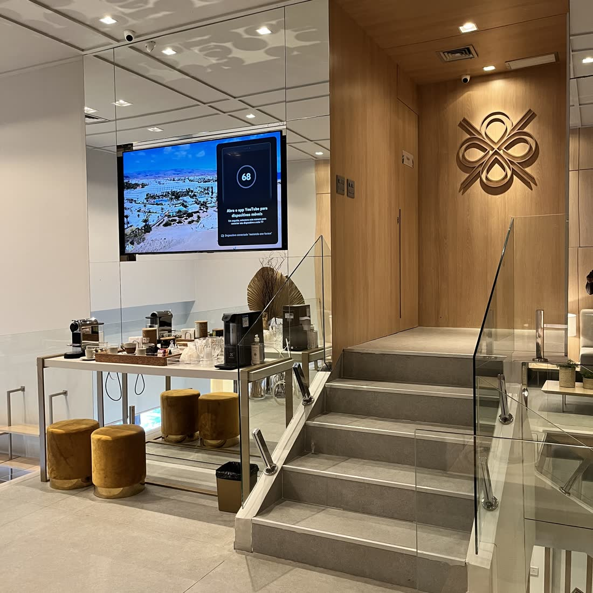

Início · Heal Institute
Heal Institute, no Shopping Cidade.
Av. Antônio Carlos Magalhães, 1298, Salvador. De segunda a sexta, com hora marcada, e também online.
Dra. Luíza VeneziaMédica · CRM-BA 34239 · Núcleo de Tricologia da Heal Institute
Espaço
A estrutura



Onde fica
Endereço e horário
Heal Institute · Shopping Cidade
Av. Antônio Carlos Magalhães, 1298 · Salvador · BA
Horário de atendimento
Segunda-feira09:00 – 17:00
Terça-feira09:00 – 17:00
Quarta-feira09:00 – 17:00
Quinta-feira09:00 – 17:00
Sexta-feira09:00 – 17:00
SábadoFechado
DomingoFechado
A distância
Atendimento online
A consulta também pode ser online, para quem não pode ir até a clínica. Fale com a equipe pelo WhatsApp para combinar.
Rota
Como chegar
Agende
Entender a causa é o primeiro passo.
Consulta presencial na Heal Institute, na Av. ACM, ou online.